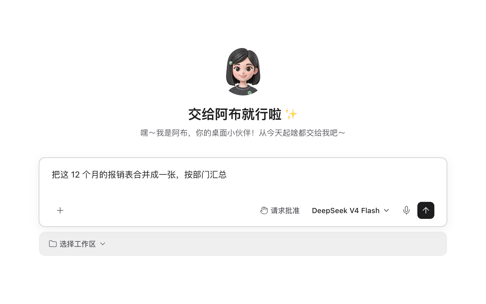
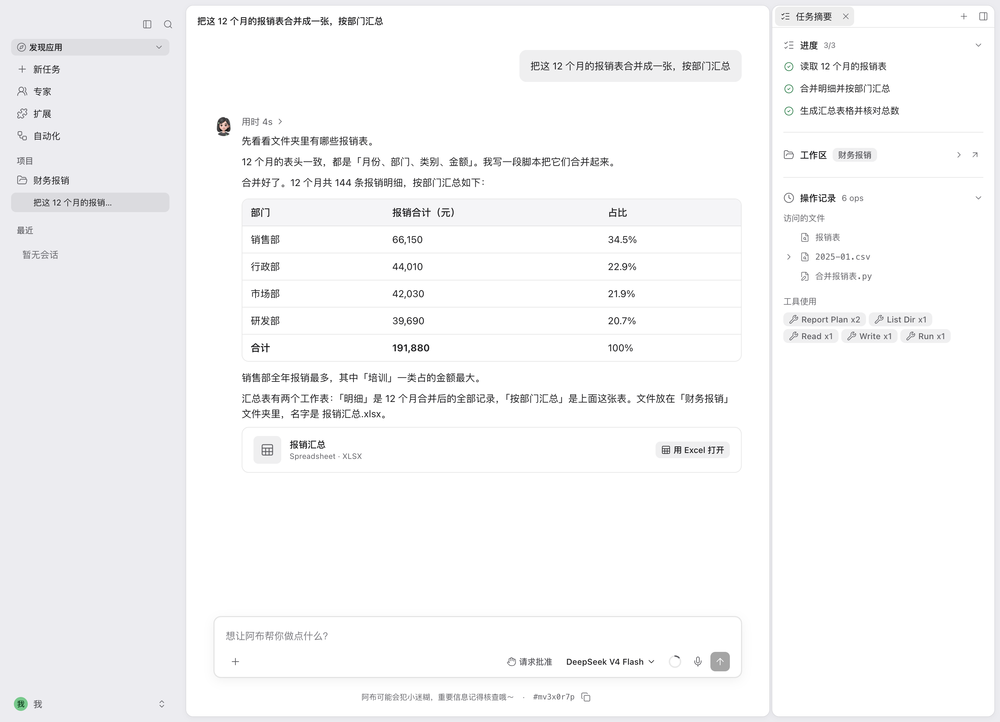
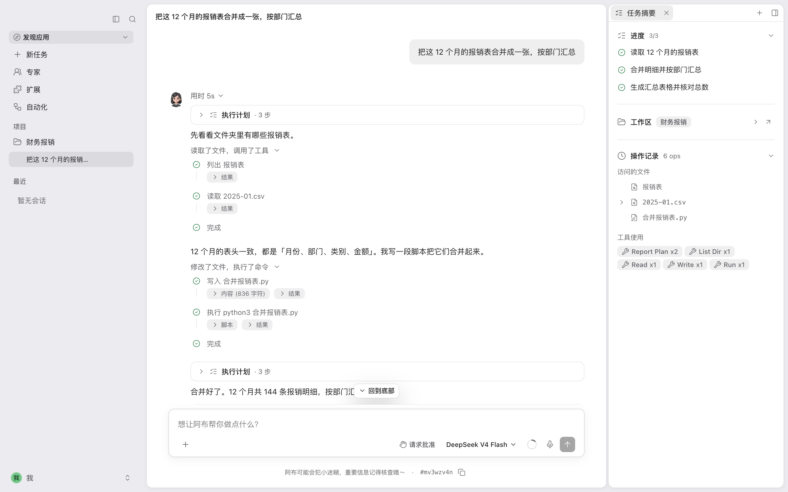
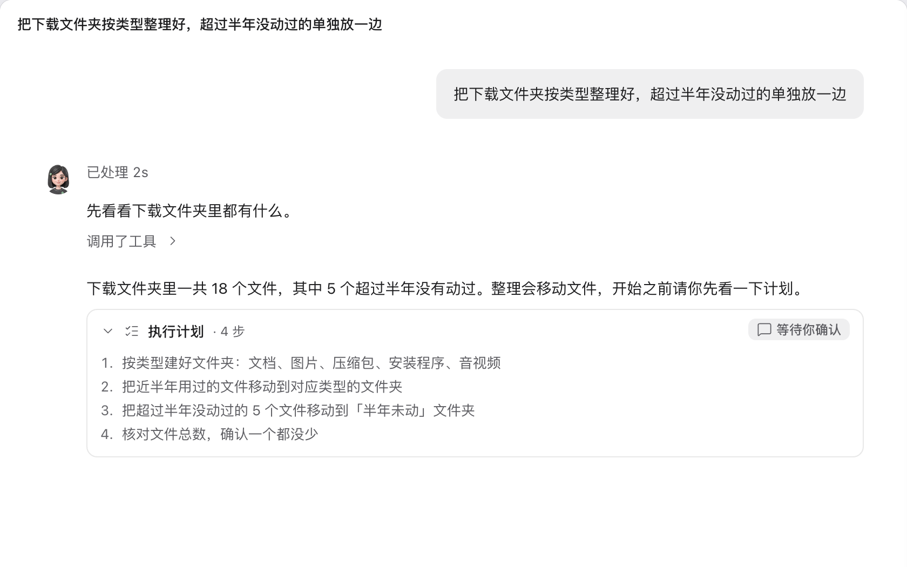
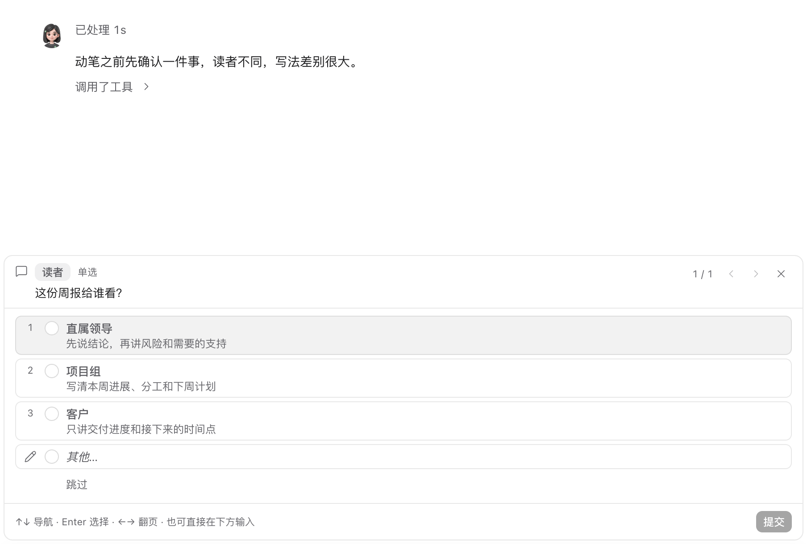
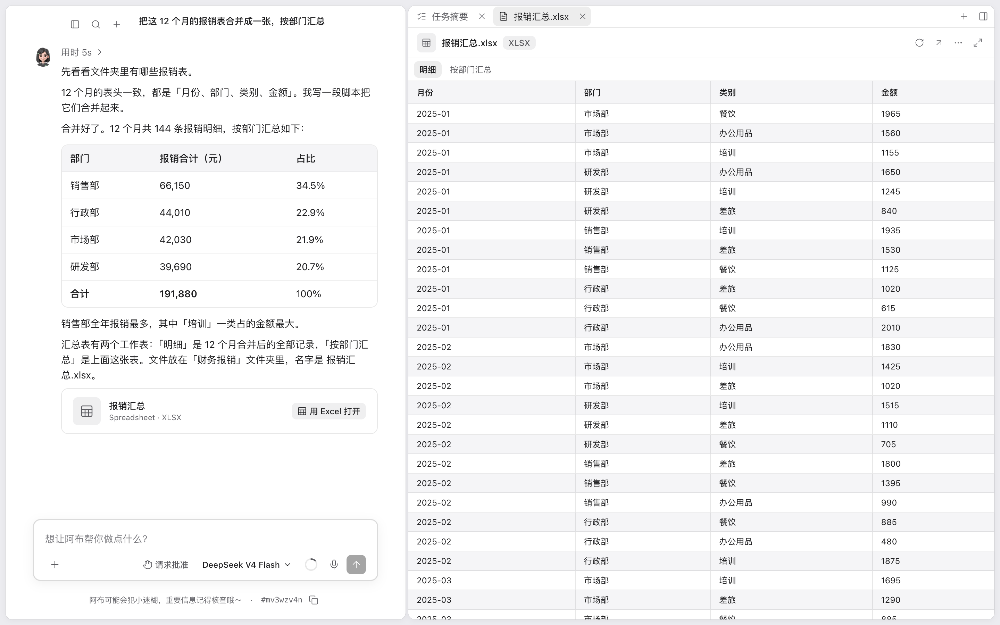
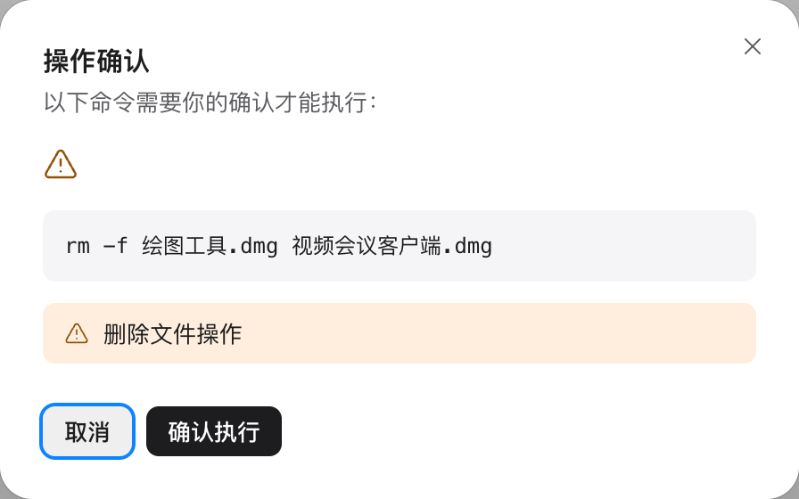

1
只说你要的结果
像交代同事一样写一句话：要做什么、用哪些材料、最后要什么文件。怎么做由阿布自己规划。

说出你要的结果。阿布在你的电脑上读文件、开浏览器、操作软件，做完把文件交给你。

阿布读了哪些文件、执行了哪些命令，每一步都留在对话里。

像交代同事一样写一句话：要做什么、用哪些材料、最后要什么文件。怎么做由阿布自己规划。

要删除、覆盖、发送或者安装的时候，阿布把每一步列出来。你批准了，它才开始。

信息不够的时候阿布不会自己猜。它弹出几个选项，你点一下，它接着做。

表格、文档、PPT 保存在你选的文件夹里，打开就能用。阿布读过哪些文件、执行过哪些命令，对话里都查得到。

阿布自己规划步骤，读文件、执行命令、写出结果。中间不需要你一步一步地指挥。
内置的技能覆盖 Office 文档、设计、浏览网页和开发。你可以安装别人做好的技能，也可以自己写。
没有接口的软件，阿布看着屏幕，用鼠标和键盘替你操作。
阿布通过 MCP 标准使用这些外部服务，直接查数据、建页面、提 Issue。
你设置好时间，阿布到点自己开始。文件有变化、收到 IM 消息的时候，它也可以自动开工。需要阿布开着、电脑没有休眠。
阿布做完一套复杂流程之后，会提议把它存成技能，并且写好草稿。你审阅通过以后，下次说一句话就能重做。
产品经理、工程师、设计师、测试各做各的部分，同时推进，最后汇总成一份结果。
阿布先列出分步计划，你点「确认执行」它才开始。等你批准的这段时间，它只读取、不改动。
需要你做决定的时候，阿布在输入框上方弹出选项卡片。卡片支持单选和多选，你也可以自己填写。
以上是示例场景
阿布很好用，已经用阿布做了个日历定制打印网站
轻量快速，使用起来很顺手
阿布帮我们公司交付了好几个项目
可以自己动手 DIY 改代码
我经常向客户推广阿布
软件开发的很不错！
一个人开发出阿布，太牛了
感谢，工具做的很棒
阿布在你的电脑上运行。它能访问哪些文件夹、哪些操作要先问你，都由你决定。
对话、文件和模型密钥都保存在本机。
阿布要往你选的文件夹之外写入，需要你先同意。
删除、覆盖、发送之前，阿布会停下来等你确认。
阿布的全部代码在 GitHub 上开源。

扫右边的二维码添加阿布作者 Shawn 的微信，备注「Abu」，他会把你拉进用户交流群。使用中的问题和想要的功能，可以直接在群里说。